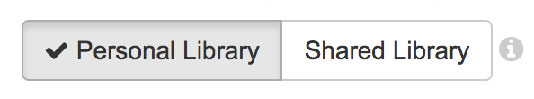
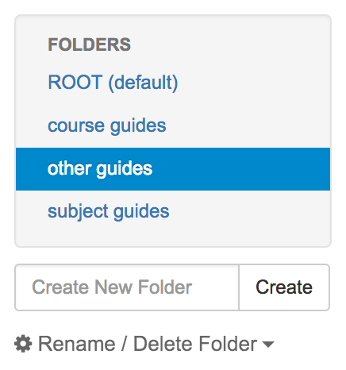
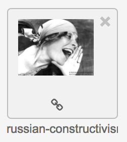

| 1 | Navigate to Your Image Repository |
| 2 | Choose Personal or Shared library  Click for more information |
| 3 | Choose / Create a folder  |
| 4 | Upload the image |
| 5 | View / Copy image URL (Click ) |
| 6 | Paste URL into Image Builder Optional |